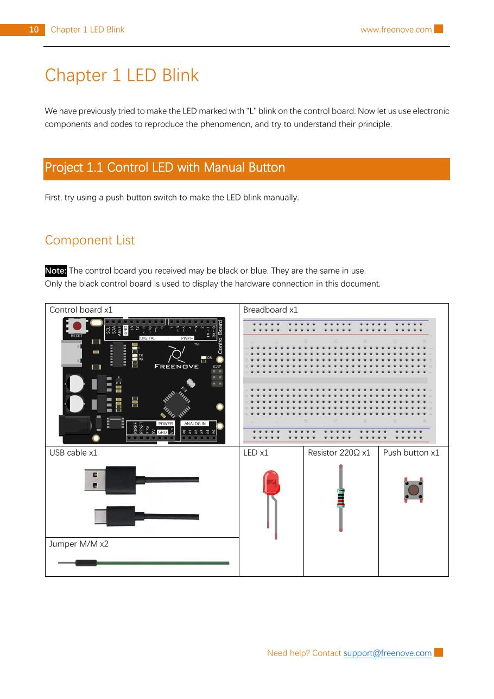
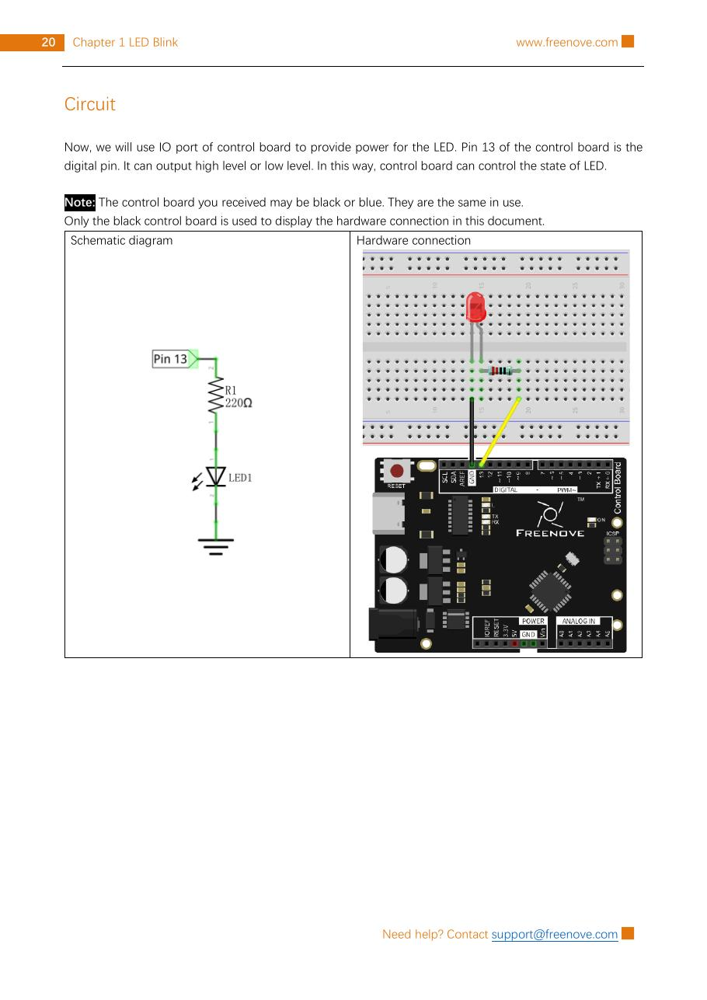

Step 1 — Identify the LED legs
The longer leg is the anode (+); the shorter leg and flat side are the cathode (−). If you reverse it, the LED normally will not light, but do not force it.
WEEK 01 · BUILD, TEST, EXPLAIN
Build an external LED circuit that the Arduino can blink with code. This is a low-voltage USB-powered experiment only.
Use pin 13 to send a repeating HIGH/LOW signal through a 220 Ω resistor and LED. The LED should turn on for one second and off for one second.

The longer leg is the anode (+); the shorter leg and flat side are the cathode (−). If you reverse it, the LED normally will not light, but do not force it.
With USB disconnected, put the LED across the breadboard’s center gap so its legs are not in the same connected row. Put one end of the 220 Ω resistor in the same row as the long LED leg. The resistor limits current and protects the LED.
Connect digital pin 13 → 220 Ω resistor → LED long leg. Connect the LED short leg to GND. Check this path before plugging in USB.

Connect USB, select your Uno-compatible board and its serial port in Arduino IDE, then paste and upload this sketch.
void setup() {
pinMode(13, OUTPUT);
}
void loop() {
digitalWrite(13, HIGH);
delay(1000);
digitalWrite(13, LOW);
delay(1000);
}What the code means: setup() runs once and makes pin 13 an output. loop() repeats forever. HIGH sends the on signal, LOW sends the off signal, and delay(1000) waits one second.
The external LED should blink: one second on, one second off. If it does not:
Change both delay(1000) lines to delay(250), upload, and predict what will happen before you look. Then restore 1000 when you are done.
0 of 5 checks complete.
This original lesson plan was checked against Freenove’s Ultimate Starter Kit Tutorial, Chapter 1 Project 1.2 and its included sketch Sketches/Sketch_1.2.1_Control_LED_by_Control_Board/Sketch_1.2.1_Control_LED_by_Control_Board.ino. The source pack is stored locally in sources/freenove-ultimate-starter-kit/.
The reference images and upstream material are used under the upstream CC BY-NC-SA 3.0 terms. Attribution and ShareAlike/noncommercial requirements apply.